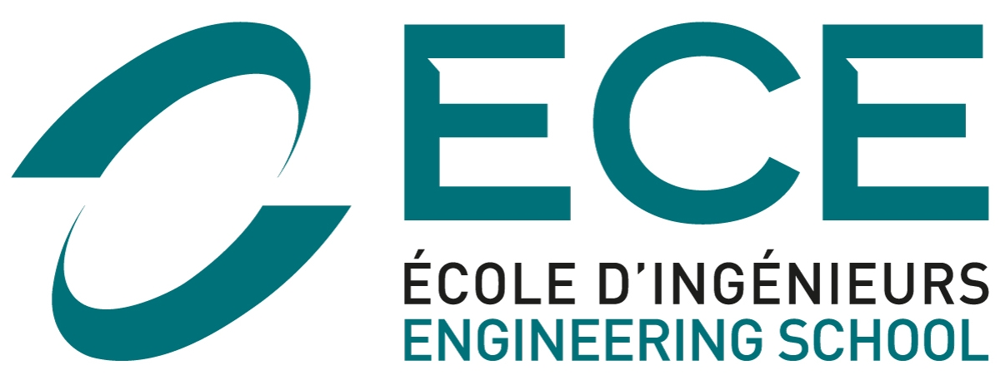
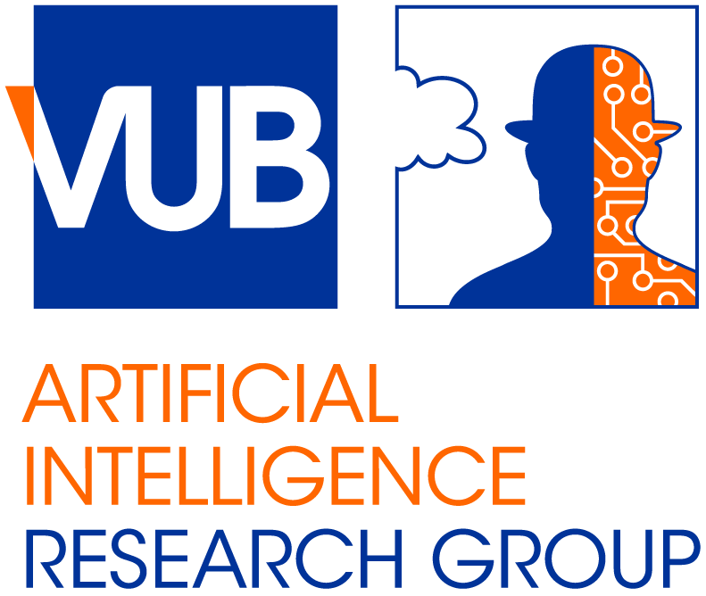

Maxime Toquebiau, PhD
Postdoctoral Researcher in Language Evolution
Education


2021 - 2024
PhD Thesis on Improving Cooperation in Multi-Agent Deep Reinforcement Learning for Mobile Robotics
at Institut des Systèmes Intelligents et de Robotique (ISIR), Sorbonne University, Paris, and École Centrale d'Électronique (ECE), Paris.
Superviors: Prof. Nicolas Bredeche (ISIR), Jae-Yun Jun Kim (ECE), Faïz Ben Amar (ISIR)
Jury: Prof. Katrien Beuls (University of Namur), Dr. Clément Moulin-Frier (INRIA), Prof. Sylvain Chevallier (Université Paris-Saclay), Prof. Aurélie Beynier (Sorbonne Université), Prof. Olivier Simon (INSA Lyon, INRIA)
In this thesis, we explored multiple ways to improve mutli-agent deep reinforcement learning (MADRL) algorithms. We identified two critical challenges: exploration and communication. For exploration, we introduced a method based on intrinsic motivation that encourages agents to explore new coordinated actions, thereby improving the convergence to optimal joint strategies. For communication, we proposed training language-augmented agents in multi-agent environments, demonstrating their effectiveness through various experiments.
2015 - 2020
Engineering diploma specialised in Artificial Intelligence
at École Centrale d'Électronique (ECE), Paris.
Research Positions

2025 - *
Postdoctoral Researcher - VUB AI Lab
Language Emergence with Multi-Agent Reinforcement Learning techniques

2024 - 2025
Attaché Temporaire d'Enseignement et de Recherche (ATER) - ISIR, Sorbonne Université
Teaching AI and programming in C and Python.
2021 - 2024
PhD student - ISIR, ECE Paris
Studying Multi-Agent Deep Reinforcement Learning, teaching programming in C and Python.
Scientific Publications
Conferences and Workshops
- Towards Language-Augmented Multi-Agent Deep Reinforcement Learning - Maxime Toquebiau, Jae-Yun Jun Kim, Faïz Ben Amar, and Nicolas Bredeche - European Conference on Artificial Intelligence (ECAI), 2025.
- Joint Intrinsic Motivation for Coordinated Exploration in Multi-Agent Deep Reinforcement Learning - Maxime Toquebiau, Nicolas Bredeche, Faïz Ben Amar, and Jae-Yun Jun Kim - Proceedings of the 23rd International Conference on Autonomous Agents and Multiagent Systems (AAMAS 2024).
- Joint Intrinsic Motivation for Coordinated Exploration in Multi-Agent Deep Reinforcement Learning - Maxime Toquebiau, Nicolas Bredeche, Faïz Ben Amar, and Jae-Yun Jun Kim - Proceedings of the Adaptive and Learning Agents Workshop (ALA 2023).
Journals
- Signaling and Social Learning in Swarms of Robots - Leo Cazenille, Maxime Toquebiau, Nicolas Lobato-Dauzier, Alessia Loi, Loona Macabre, Nathanael Aubert-Kato, Anthony Genot, and Nicolas Bredeche - Philosophical Transactions of the Royal Society A, 2025.
Teaching
- 2024-2025: Multi-agent deep reinforcement learning, lecture and practical works, Master 2, Sorbonne Université.
- 2025: Machine Learning for Robotics, practical works, Master 1, Sorbonne Université.
- 2025: Artificial Intelligence and Games, practical works, Master 1, Sorbonne Université.
- 2025: Data structures in C, practical works, Bachelor, Sorbonne Université.
- 2024: Programming in Python, lecture and practical works, Bachelor, Tnstitut de Statistiques de Sorbonne Université (ISUP).
- 2024: Programming in C, practical works, Bachelor, ISUP.
- 2023: Programming in Python, lecture and practical works, Bachelor, ECE.
- 2021-2023: Programming in C, practical works, Bachelor, ECE.